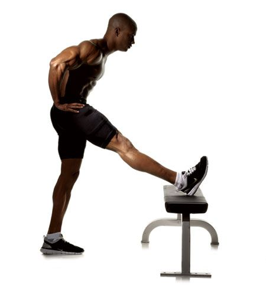

Não faça alongamento antes de malhar! | Tudo Para Homens
2021.07.01 00:43

HOME SOBRE O TPH TPH GIRL CONTATO ANUNCIE Automobilismo Comportamento Cuidado Pessoal Beleza Estilo Esporte Saúde Entretenimento Agenda Arte Arquitetura & Decoração Cinema & Séries Cultura Games Música Política Gastronomia Bebida Comida Mulheres Tecnologia Viagem Toggle navigation
Não faça alongamento antes de malhar!
29 de abril de 2014 por Guilherme Cury 0
Se você ainda chega na academia e perde tempo fazendo alguns tipos de alongamentos antes de malhar, saiba que você pode estar prejudicando seu treino e até seus músculos.
Se você quer/gosta de alongar, o ideal é fazer uma aula de alongamento depois do treino ou em outro período. Pelo menos este é o conselho de especialistas para aqueles que querem realmente malhar melhor.
Alongamentos tradicionais (como tentar tocar os pés) acabam endurecendo ainda mais os músculos em vez de relaxá-los, exatamente o oposto do que você quer quando vai começar a fazer exercícios.
Os especialistas dizem que esse tipo de atividade é como puxar um pedaço de borracha. As chances de prejudicar um músculo são grandes.
Segundo Kieran O’Sullivan , professor de Educação Física da Universidade de Limerik, na Irlanda, o grande problema é que nós não fazemos os alongamentos na hora certa.
Quando alongamos os músculos antes dos exercícios, eles são forçados e, por conseqüência, ficam contraídos. Isso causa uma grande dificuldade quando você quer se mover mais rápido ou fazer mais força. As chances de se machucar durante o exercício também aumentam.
O’Sullivan diz que alongamentos fazem bem, mas não devem ser feitos apenas antes do exercício e sim depois da malhação ou no fim do dia.
Ele compara os alongamentos com levantamento de peso. Você não deve levantar peso antes de fazer exercício, muito menos se alongar.
Nos últimos anos vários estudos mostraram que alongamentos antes do exercício fazem com que você fique mais fraco e mais lento. E analisando essas pesquisas, cientistas concluíram que pessoas que se alongam, ao contrário do que se achava, têm chances maiores de sofrer lesões durante o exercício.
Fonte: MSNBC e HypeScience .
Conheça os 50 melhores restaurantes do mundo
Testamos o Honda CR-V (EXL 4X2)
Sobre o autor Mais posts
Guilherme Cury 1882 Posts
33 anos, blogueiro, publicitário e músico. Formado em Propaganda & MKT, é blogueiro há mais de 10 anos. Atualmente trabalha com conteúdo para internet e se aventura no mundo musical.
Dee Gees: Foo Fighters vai lançar um álbum tributo ao Bee Gees
21 de junho de 2021
Como fazer o sexo durar mais tempo
18 de junho de 2021
Joe Biden vai distribuir cerveja se 70% dos americanos adultos forem vacinados até 4 de julho
9 de junho de 2021
Odeia coentro e acha que tem gosto de sabão? É culpa da genética, diz estudo!
8 de junho de 2021
0 Comentários
Deixe um comentário Cancelar resposta
PESQUISA:
BELLA DA SEMANA COM 30%
Facebook
TV TPH
Últimos posts
O que todo homem deve saber ao editar vídeos para as redes sociais De carona com Julia Abrams [+18] Sinais que demonstram que ela vai terminar com você Os 3 jogos mais marcantes do Nintendo 64 Como uma mulher escolhe transar ou não com você
Categorias
Agenda Arquitetura & Decoração Arte Automobilismo Bebida Beleza Cinema & Séries Comida Comportamento Cuidado Pessoal Cultura Entretenimento Esporte Estilo Games Gastronomia Mulheres Música Política Publieditorial Saúde Sem categoria Suplementos Tecnologia TPH Girl Viagem
Sobre
O Tudo Para Homens, que também pode ser chamado de TPH, é um portal com notícias diárias sobre tudo que todo homem gosta: Automobilismo, Moda, Esporte, Bebida, Mulheres, Comportamento, Sexo, Tecnologia e muito mais.
Páginas
ANUNCIE CONTATO HOME SOBRE O TPH TPH Girl
Links
Eu Amo Vinho ACOMPANHANTES VIVALOCAL Cigarro Eletronico Xvideos Xvideo Porno Xvidios Xvideo Brasil videos porno Porno Gratis Videos Porno Mulher Pelada Xvideos Porno xvideos porno Xvideos Brasil x video Acompanhantes Brasilia Acompanhantes SP Porno acompanhantes de luxo xxx